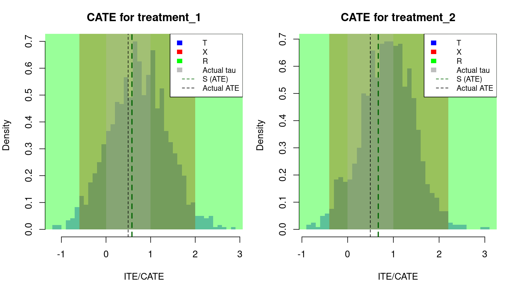
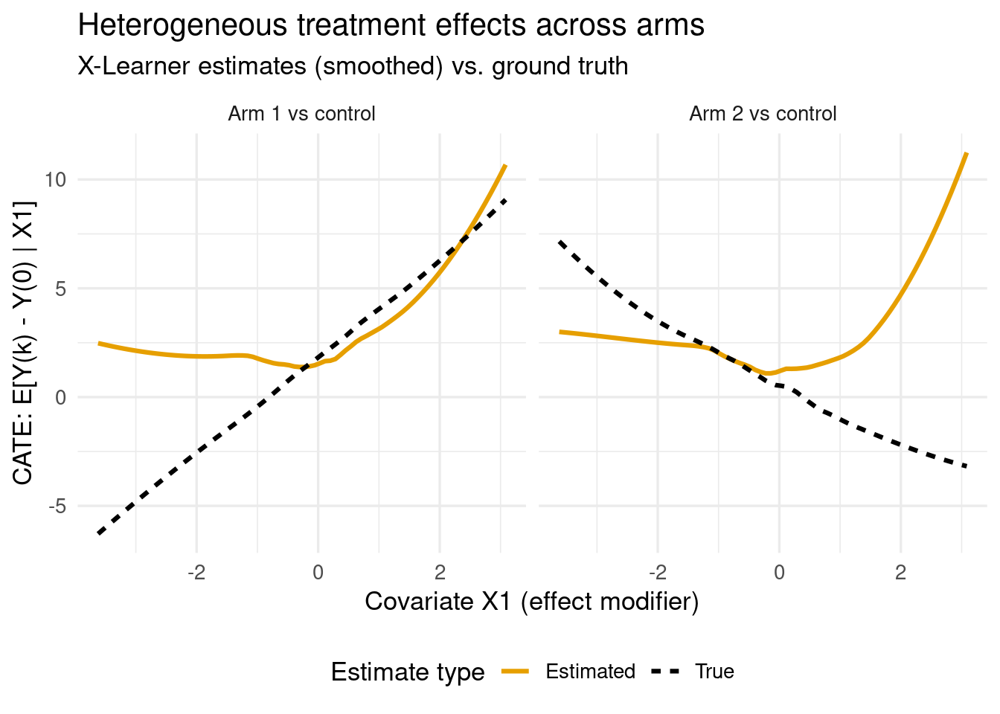
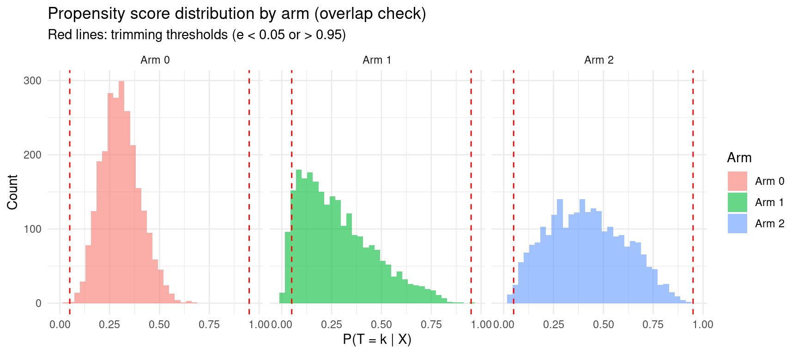
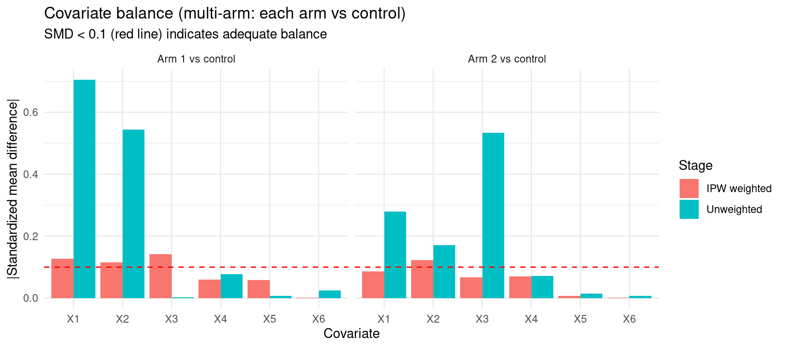
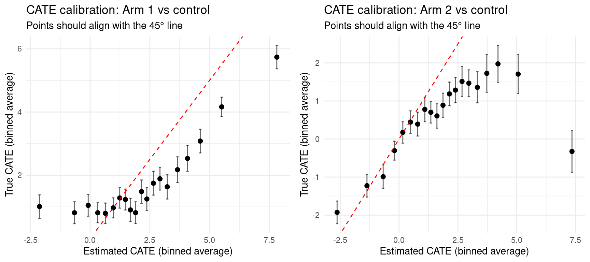
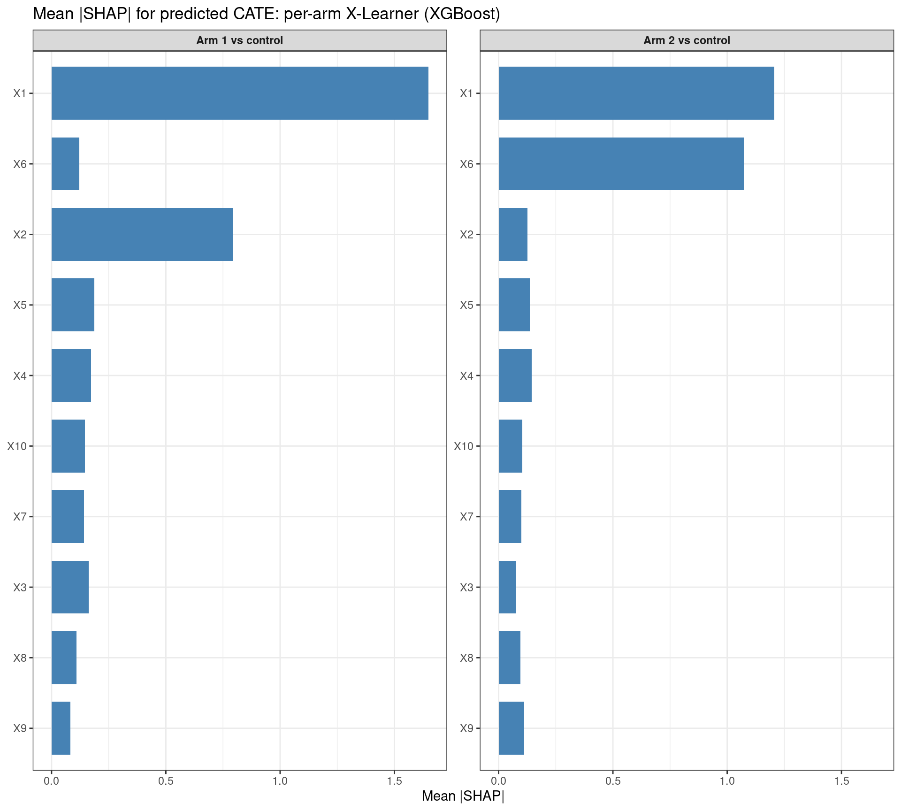
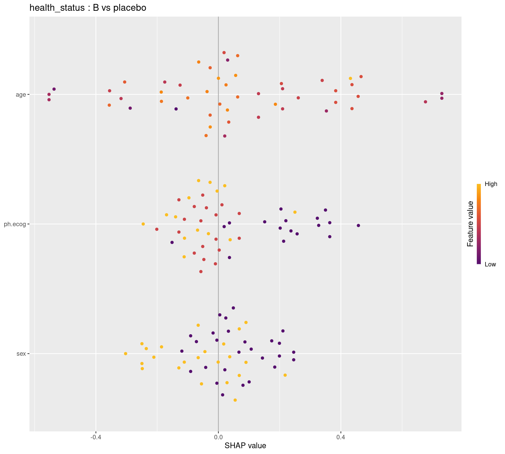

Code
packages <- c(
"tidyverse",
"plyr",
"RCausalML",
"causaldata",
"mlbench",
"xgboost",
"kernelshap",
"shapviz",
"future",
"mlr3",
"mlr3learners",
"nnet",
"gridExtra",
"survival"
)
This notebook extends meta-learners to the case of multiple discrete treatments (\(K \geq 2\) arms). The core logic of each learner generalizes, but the implementation requires careful handling of multinomial propensity scores, arm-specific models, and diagnostics for overlap and balance across multiple arms.
Part 0 uses RCausalML end to end: the mode-1-style simulator simulate_nuisance_and_easy_treatment() plus a random split of treated units into two arms, then S-, T-, X-, and R-Learners (same pattern as meta-learners-single-multiple-treatment.qmd). Part A onward extends notebook 02 with a custom three-arm DGP with known \(\tau_k(x)\), X-Learner and DR-Learner pipelines via mlr3 + ranger, diagnostics and validation, and Part C with RCausalML per-arm X-Learner + SHAP. Part D applies the same multi-arm mindset to lung from survival with a simulated three-arm treatment and two outcomes (log_time, health_status), then fits S-, T-, X-, and R-Learners and SHAP explanations for XGBoost X-Learners, matching the data recipe in 09-multi-arm-causal-boost-r.qmd.
Meta-learners extend naturally from the binary setting to the case of multiple discrete treatments, where each unit receives exactly one of \(K \geq 2\) mutually exclusive treatment arms. Denoting the treatment variable as \(T \in \{0, 1, \dots, K-1\}\), with \(T = 0\) designated as the control or reference arm, the estimand of interest becomes a set of \(K - 1\) pairwise contrasts against control:
\[\tau_k(x) = \mathbb{E}[Y(k) - Y(0) \mid X = x], \quad k = 1, \dots, K-1\]
where \(Y(k)\) denotes the potential outcome under treatment arm \(k\). This family of CATE functions characterizes how the effect of each active treatment, relative to control, varies across the covariate space. In principle, one could also target pairwise contrasts between active arms, \(\mathbb{E}[Y(k) - Y(k') \mid X = x]\) for \(k \neq k'\), though the contrast-versus-control framing is most common in applied work and maps cleanly onto the meta-learner machinery developed for the binary case.
The multi-arm setting introduces several challenges that do not arise — or arise less acutely — with binary treatments.
Multinomial propensity scores. When treatment is assigned among \(K\) arms, the propensity score generalizes to a vector of conditional probabilities:
\[\mathbf{e}(x) = \left( e_0(x), e_1(x), \dots, e_{K-1}(x) \right), \quad e_k(x) = P(T = k \mid X = x), \quad \sum_{k=0}^{K-1} e_k(x) = 1\]
Estimation of \(\mathbf{e}(x)\) requires a multinomial classification model — such as multinomial logistic regression, softmax-output gradient boosting, or a multiclass random forest — rather than a single binary classifier. The arm-specific probabilities \(e_k(x)\) enter directly into doubly robust and propensity-weighted estimators (X-Learner, R-Learner, DR-Learner), and their quality has a first-order impact on CATE estimation accuracy. In some designs, particularly when active arms are defined post hoc by splitting a treated group, binary propensity scores for “any treatment” may suffice, but this approximation should be used with care.
Arm-level overlap and sparsity. A critical assumption for identification is positivity (or overlap): for each arm \(k\),
\[e_k(x) > 0 \quad \text{for all } x \text{ in the support of } X\]
With many arms, positivity violations become more likely simply because each arm captures a smaller fraction of the sample. Sparse treatment arms — those with few observations — lead to poorly estimated outcome models and propensity scores for that arm, inflating the variance of the corresponding CATE estimates. Practitioners should routinely inspect the marginal distribution of arm sizes and the effective sample size available for each arm-specific model fit.
Covariate overlap across arms. Even when each arm has adequate marginal sample size, the covariate distributions across arms may diverge substantially. This is particularly relevant in observational studies where treatment selection is strongly confounded. For each pairwise contrast \(\tau_k(x)\), overlap diagnostics — such as the distribution of \(e_k(x) / e_0(x)\) or standardized mean differences in \(X\) between arm \(k\) and control — should be examined before trusting CATE estimates in regions of thin support.
Each meta-learner from the binary case extends to \(K\) arms, though the adaptations vary in complexity.
S-Learner. A single outcome model \(\hat{\mu}(x, t)\) is fit on the full sample with \(T\) encoded as a categorical feature (via dummy coding or an embedding). The CATE for arm \(k\) is recovered as:
\[\hat{\tau}_k^S(x) = \hat{\mu}(x, k) - \hat{\mu}(x, 0)\]
This is the simplest extension and inherits the same weakness as in the binary case: tree-based base learners may fail to adequately represent the treatment dimension when treatment effects are small relative to outcome variation.
T-Learner. Separate outcome models \(\hat{\mu}_k(x)\) are fit on each arm’s subsample independently, and the CATE is estimated as:
\[\hat{\tau}_k^T(x) = \hat{\mu}_k(x) - \hat{\mu}_0(x)\]
This requires fitting \(K\) models in total. The approach is straightforward but amplifies the imbalance problem: with \(K\) arms of roughly equal size, each arm-specific model is trained on approximately \(1/K\) of the data, which can severely degrade performance for large \(K\) or small total sample sizes.
X-Learner. The cross-fitting logic extends arm by arm: for each active arm \(k\), the binary X-Learner pipeline is run using arm \(k\) and the control arm as the two groups, with the arm-specific propensity score \(e_k(x)\) used for weighting. This produces \(K - 1\) independent CATE estimates \(\hat{\tau}_k^X(x)\). The X-Learner’s efficiency advantage under imbalance carries over directly and is particularly valuable here, since each arm-versus-control comparison may involve substantially unequal group sizes.
R-Learner. The Robinson decomposition generalizes by residualizing against arm-specific nuisance functions. For each contrast \(k\) versus \(0\), one restricts attention to units with \(T \in \{0, k\}\) and applies the standard binary R-Learner, or alternatively uses a fully multivariate formulation that residualizes outcomes against \(\hat{\mu}(x) = \mathbb{E}[Y \mid X]\) and treatments against their multinomial propensity predictions. The orthogonalization property carries over, making the R-Learner relatively robust to nuisance model misspecification in each arm-specific estimation problem.
DR-Learner. The doubly robust AIPW pseudo-outcome for contrast \(k\) versus \(0\) generalizes to:
\[\hat{\phi}_i^k = \frac{\mathbf{1}[T_i = k](Y_i - \hat{\mu}_k(X_i))}{e_k(X_i)} - \frac{\mathbf{1}[T_i = 0](Y_i - \hat{\mu}_0(X_i))}{e_0(X_i)} + \hat{\mu}_k(X_i) - \hat{\mu}_0(X_i)\]
A separate regression of \(\hat{\phi}_i^k\) on \(X_i\) yields the CATE estimate for arm \(k\). The doubly robust property holds arm by arm: each \(\hat{\tau}_k^{DR}(x)\) is consistent if either the outcome model for arm \(k\) or the propensity scores \(e_k(x)\) and \(e_0(x)\) are correctly specified. Cross-fitting across arms is essential to avoid overfitting bias in the pseudo-outcome construction.
The choice among meta-learners in the multi-arm setting follows the same logic as in the binary case, with additional weight given to arm-level sample sizes and propensity score quality. A few practical guidelines:
We use the same core packages (tidyverse, RCausalML, xgboost, etc.), plus mlr3 and mlr3learners for the custom multi-arm X- and DR-learner stages, nnet (multinom) for multinomial propensity, and gridExtra for multi-panel figures. When CAUSALML_FAST_RENDER=TRUE (default), sample sizes and forest sizes are reduced for quicker rendering; set CAUSALML_FAST_RENDER=FALSE for a heavier run.
Following R packages are required to run this notebook. If any of these packages are not installed, you can install them using the code below:
tidyverse, plyr, RCausalML, causaldata, mlbench, xgboost, kernelshap, shapviz, future, mlr3, mlr3learners, nnet, gridExtra, survival
packages <- c(
"tidyverse",
"plyr",
"RCausalML",
"causaldata",
"mlbench",
"xgboost",
"kernelshap",
"shapviz",
"future",
"mlr3",
"mlr3learners",
"nnet",
"gridExtra",
"survival"
)# Install missing packages
# new_packages <- packages[!(packages %in% installed.packages()[, "Package"])]
# if (length(new_packages)) install.packages(new_packages)
# remotes::install_github("mlr-org/mlr3learners")# Verify installation
cat("Installed packages:\n")Installed packages: tidyverse plyr RCausalML causaldata mlbench xgboost
TRUE TRUE TRUE TRUE TRUE TRUE
kernelshap shapviz future mlr3 mlr3learners nnet
TRUE TRUE TRUE TRUE TRUE TRUE
gridExtra survival
TRUE TRUE # Load packages with suppressed messages
invisible(lapply(packages, function(pkg) {
suppressPackageStartupMessages(library(pkg, character.only = TRUE))
}))# Check loaded packages
cat("Successfully loaded packages:\n")Successfully loaded packages: [1] "package:survival" "package:gridExtra" "package:nnet"
[4] "package:mlr3learners" "package:mlr3" "package:future"
[7] "package:shapviz" "package:kernelshap" "package:xgboost"
[10] "package:mlbench" "package:causaldata" "package:RCausalML"
[13] "package:plyr" "package:lubridate" "package:forcats"
[16] "package:stringr" "package:dplyr" "package:purrr"
[19] "package:readr" "package:tidyr" "package:tibble"
[22] "package:ggplot2" "package:tidyverse" "package:stats"
[25] "package:graphics" "package:grDevices" "package:utils"
[28] "package:datasets" "package:methods" "package:base" set.seed(42)
has_ranger <- requireNamespace("ranger", quietly = TRUE)
if (!has_ranger) stop("Package 'ranger' is required (via mlr3learners). Install with install.packages(\"ranger\")")
fast_run <- Sys.getenv("CAUSALML_FAST_RENDER", "TRUE") == "TRUE"
n_multi <- if (fast_run) 2500L else 6000L
n_trees_mu_x <- if (fast_run) 200L else 800L
n_trees_tau_x <- if (fast_run) 250L else 1000L
n_trees_mu_dr <- if (fast_run) 150L else 600L
n_trees_score_dr <- if (fast_run) 200L else 800L
nrounds_xgb_shap <- if (fast_run) 20L else 50L
valid_frac <- 0.2
base_learner <- "ranger"
n_synth_multi <- if (fast_run) 1200L else 2000L
p_synth <- 8LFor the binary DGP we use simulate_nuisance_and_easy_treatment(), which matches synthetic_data(mode = 1, ...) in R/dataset.R (difficult nuisance, easy treatment). The exported name synthetic_data() in this package may refer to a mode-2-only generator (R/synthetic_data.R); calling the explicit simulator avoids ambiguity. We then randomly assign treated units to arm 1 or 2 (80% / 20%), giving control (0), treatment_a (1), treatment_b (2).
Note: Arms are created after the binary DGP, so the latent effect tau is the same for both arms; do not interpret overlap plots or RMSE here as a benchmark for multi-arm DGP design. For known arm-specific CATEs and multinomial propensities, use Part A.
d2 <- simulate_nuisance_and_easy_treatment(n = n_synth_multi, p = p_synth, sigma = 1.0)
y2 <- d2$y
X2 <- d2$X
w_raw <- d2$w
set.seed(123)
treatment_multi <- w_raw
treated_idx <- which(w_raw == 1)
treatment_multi[treated_idx] <- sample(
c(1L, 2L), length(treated_idx), replace = TRUE, prob = c(0.8, 0.2)
)
tau2 <- d2$tau
e2 <- d2$e
cat("Sample size:", length(y2), "\n")Sample size: 1200 cat("Treatment counts (0=control, 1=treatment_a, 2=treatment_b):\n")Treatment counts (0=control, 1=treatment_a, 2=treatment_b):treatment_multi
0 1 2
605 476 119 SLearner supports multiple arms: one contrast per non-control level. predict() returns a matrix with one column per treatment arm vs control.
treatment_1 treatment_2
0.5813176 0.6698034 ate_s_m_res <- estimate_ate(learner_s_m, X2, treatment_multi, y2, return_ci = TRUE)
rbind(lower = ate_s_m_res$ate_lb, ate = ate_s_m_res$ate, upper = ate_s_m_res$ate_ub) [,1] [,2]
lower 0.5187603 0.5752030
ate 0.5813176 0.6698034
upper 0.6438748 0.7644038Use estimate_ate(learner_s_m, X2, treatment_multi, y2, return_ci = TRUE, bootstrap_ci = TRUE, n_bootstraps = 100L, bootstrap_size = 5000L) for a full bootstrap (fewer iterations for quick tests).
head(cate_s_m, 10) [,1] [,2]
[1,] 1.1181632 0.8166293
[2,] 0.7712340 0.8288946
[3,] 1.3809004 1.2346622
[4,] 0.8880510 0.7516995
[5,] 1.4082033 0.8421527
[6,] 0.4943873 0.4763745
[7,] 0.9489774 0.6915121
[8,] 0.9708918 1.1415153
[9,] 1.3437797 0.9925179
[10,] 0.8373356 0.4872815Use fit_predict(learner_s_m, X2, treatment_multi, y2, return_ci = TRUE, ...); returned objects include te, te_lower, te_upper (matrices when multiple arms).
TLearner is binary in RCausalML; fit one learner per arm (control vs 1, control vs 2).
mask1 <- (treatment_multi == 0) | (treatment_multi == 1)
X2_1 <- X2[mask1, , drop = FALSE]
y2_1 <- y2[mask1]
w2_1 <- as.integer(treatment_multi[mask1] == 1)
learner_t_1 <- fit(TLearner(learner = base_learner, control_name = 0), X2_1, w2_1, y2_1)
ate_t_1 <- estimate_ate(learner_t_1, X2_1, w2_1, y2_1)
mask2 <- (treatment_multi == 0) | (treatment_multi == 2)
X2_2 <- X2[mask2, , drop = FALSE]
y2_2 <- y2[mask2]
w2_2 <- as.integer(treatment_multi[mask2] == 2)
learner_t_2 <- fit(TLearner(learner = base_learner, control_name = 0), X2_2, w2_2, y2_2)
ate_t_2 <- estimate_ate(learner_t_2, X2_2, w2_2, y2_2)
rbind(
lower = c(ate_t_1$ate_lb, ate_t_2$ate_lb),
ate = c(ate_t_1$ate, ate_t_2$ate),
upper = c(ate_t_1$ate_ub, ate_t_2$ate_ub)
) [,1] [,2]
lower 0.6417415 0.7405167
ate 0.7096697 0.8435616
upper 0.7775980 0.9466065 treatment_1 treatment_2
[1,] 1.2197478 0.7758804
[2,] 0.9862329 0.9385493
[3,] 1.5903282 1.7084365
[4,] 1.2122683 1.1160280
[5,] 1.5827756 1.0764106
[6,] 0.6620474 0.7582088
[7,] 1.2633518 0.9571609
[8,] 1.1294482 1.7663566
[9,] 1.6669521 1.2921623
[10,] 0.9049973 0.4770967Per contrast: fit_predict(learner_t_1, X2_1, w2_1, y2_1, return_ci = TRUE, ...) and similarly for learner_t_2 on (X2_2, w2_2, y2_2).
One X-Learner per arm; optional propensity vector p on the subsample (same e2 as “any treatment” for compatibility).
e2_1 <- e2[mask1]
e2_2 <- e2[mask2]
learner_x_1 <- fit(XLearner(learner = base_learner, control_name = 0), X2_1, w2_1, y2_1, p = e2_1)
ate_x_1 <- estimate_ate(learner_x_1, X2_1, w2_1, y2_1, p = e2_1)
learner_x_2 <- fit(XLearner(learner = base_learner, control_name = 0), X2_2, w2_2, y2_2, p = e2_2)
ate_x_2 <- estimate_ate(learner_x_2, X2_2, w2_2, y2_2, p = e2_2)
rbind(
lower = c(ate_x_1$ate_lb, ate_x_2$ate_lb),
ate = c(ate_x_1$ate, ate_x_2$ate),
upper = c(ate_x_1$ate_ub, ate_x_2$ate_ub)
) [,1] [,2]
lower 0.5787928 0.7030105
ate 0.6389071 0.7976893
upper 0.6990215 0.8923681learner_x_1_nop <- fit(XLearner(learner = base_learner, control_name = 0), X2_1, w2_1, y2_1)
learner_x_2_nop <- fit(XLearner(learner = base_learner, control_name = 0), X2_2, w2_2, y2_2)
ate_x_1_nop <- estimate_ate(learner_x_1_nop, X2_1, w2_1, y2_1)
ate_x_2_nop <- estimate_ate(learner_x_2_nop, X2_2, w2_2, y2_2)
rbind(
lower = c(ate_x_1_nop$ate_lb, ate_x_2_nop$ate_lb),
ate = c(ate_x_1_nop$ate, ate_x_2_nop$ate),
upper = c(ate_x_1_nop$ate_ub, ate_x_2_nop$ate_ub)
) [,1] [,2]
lower 0.5878537 0.7184745
ate 0.6479600 0.8127221
upper 0.7080663 0.9069698 treatment_1 treatment_2
[1,] 1.0197594 0.9178645
[2,] 0.9436467 1.0239196
[3,] 1.0943784 1.1376868
[4,] 0.9081727 1.0044586
[5,] 1.1253715 0.9325482
[6,] 0.5667991 0.7374018
[7,] 1.1110895 0.8999133
[8,] 0.8300460 1.3244516
[9,] 1.2266673 0.9897068
[10,] 0.7475121 0.6222808 cate_x_1_nop cate_x_2_nop
[1,] 1.0449450 0.8875701
[2,] 0.9052673 1.0875563
[3,] 1.1059861 1.1785379
[4,] 0.9087349 0.9519947
[5,] 1.1052721 0.9739714
[6,] 0.6482271 0.7886329
[7,] 1.1198066 0.9276703
[8,] 0.8419547 1.3497599
[9,] 1.2701721 0.9846746
[10,] 0.7773068 0.6378185One R-Learner per arm (n_fold as in binary case).
learner_r_1 <- fit(
RLearner(learner = base_learner, control_name = 0, n_fold = 3),
X2_1, w2_1, y2_1, p = e2_1
)
ate_r_1 <- estimate_ate(learner_r_1, X2_1, w2_1, y2_1, p = e2_1)
learner_r_2 <- fit(
RLearner(learner = base_learner, control_name = 0, n_fold = 3),
X2_2, w2_2, y2_2, p = e2_2
)
ate_r_2 <- estimate_ate(learner_r_2, X2_2, w2_2, y2_2, p = e2_2)
rbind(
lower = c(ate_r_1$ate_lb, ate_r_2$ate_lb),
ate = c(ate_r_1$ate, ate_r_2$ate),
upper = c(ate_r_1$ate_ub, ate_r_2$ate_ub)
) [,1] [,2]
lower 0.5399964 0.4084157
ate 0.6844893 0.6313513
upper 0.8289821 0.8542868learner_r_1_nop <- fit(
RLearner(learner = base_learner, control_name = 0, n_fold = 3),
X2_1, w2_1, y2_1
)
learner_r_2_nop <- fit(
RLearner(learner = base_learner, control_name = 0, n_fold = 3),
X2_2, w2_2, y2_2
)
ate_r_1_nop <- estimate_ate(learner_r_1_nop, X2_1, w2_1, y2_1)
ate_r_2_nop <- estimate_ate(learner_r_2_nop, X2_2, w2_2, y2_2)
rbind(
lower = c(ate_r_1_nop$ate_lb, ate_r_2_nop$ate_lb),
ate = c(ate_r_1_nop$ate, ate_r_2_nop$ate),
upper = c(ate_r_1_nop$ate_ub, ate_r_2_nop$ate_ub)
) [,1] [,2]
lower 0.4996730 0.5665189
ate 0.6465351 0.7866981
upper 0.7933972 1.0068773 treatment_1 treatment_2
[1,] 0.9392373 0.57804702
[2,] 0.5290978 -0.14994644
[3,] 2.8277046 2.62118842
[4,] 2.2884178 0.08767146
[5,] 1.5862380 0.57494617
[6,] 0.2353903 0.56309442
[7,] 1.5654724 1.46561309
[8,] 1.7408590 2.06037560
[9,] 2.3565199 1.76238314
[10,] 0.8066308 -0.02324233 cate_r_1_nop cate_r_2_nop
[1,] 1.7811195 0.7984472
[2,] 0.4864009 0.7736171
[3,] 2.7791865 2.7204445
[4,] 1.8955482 1.2512559
[5,] 1.5900909 1.0493746
[6,] 0.2480024 -0.3679909
[7,] 1.4036000 -0.8638480
[8,] 1.3771609 2.2901448
[9,] 2.1882486 1.8798209
[10,] 0.7488188 0.8448147tau)par(mfrow = c(1, 2), mar = c(4, 4, 3, 1))
bins <- 30
for (col in 1:2) {
arm_name <- c("treatment_1", "treatment_2")[col]
hist(
cate_t_m[, col], col = adjustcolor("blue", 0.4), breaks = bins, border = NA,
main = paste("CATE for", arm_name), xlab = "ITE/CATE", ylab = "Density", freq = FALSE
)
hist(cate_x_m[, col], col = adjustcolor("red", 0.4), breaks = bins, border = NA, add = TRUE)
hist(cate_r_m[, col], col = adjustcolor("green", 0.4), breaks = bins, border = NA, add = TRUE)
hist(tau2, col = adjustcolor("gray", 0.25), breaks = bins, border = NA, add = TRUE)
abline(v = ate_s_m[col], lty = 2, col = "darkgreen", lwd = 2)
abline(v = mean(tau2), lty = 2, col = "black", lwd = 1)
legend(
"topright",
legend = c("T", "X", "R", "Actual tau", "S (ATE)", "Actual ATE"),
fill = c("blue", "red", "green", "gray", NA, NA),
lty = c(NA, NA, NA, NA, 2, 2),
col = c(NA, NA, NA, NA, "darkgreen", "black"),
border = NA, cex = 0.8
)
}
summary_multi_rcml <- data.frame(
Learner = c("S-Learner", "T-Learner", "X-Learner", "R-Learner"),
ATE_arm1 = c(ate_s_m[1], ate_t_1$ate, ate_x_1$ate, ate_r_1$ate),
ATE_arm2 = c(ate_s_m[2], ate_t_2$ate, ate_x_2$ate, ate_r_2$ate)
)
knitr::kable(summary_multi_rcml, digits = 4)| Learner | ATE_arm1 | ATE_arm2 |
|---|---|---|
| S-Learner | 0.5813 | 0.6698 |
| T-Learner | 0.7097 | 0.8436 |
| X-Learner | 0.6389 | 0.7977 |
| R-Learner | 0.6845 | 0.6314 |
We simulate \(K=3\) arms with multinomial assignment, known \(\tau_1(x)\), \(\tau_2(x)\) versus control, and store true propensities for diagnostics.
df_multi
generate_multi_treatment_data <- function(n = 6000, K = 3) {
X <- matrix(rnorm(n * 10), nrow = n)
colnames(X) <- paste0("X", 1:10)
eta <- cbind(
rep(0, n),
-0.3 + 0.7 * X[, 1] - 0.5 * X[, 2],
0.2 - 0.4 * X[, 1] + 0.6 * X[, 3]
)
exp_eta <- exp(eta)
probs <- exp_eta / rowSums(exp_eta)
Tdraw <- apply(probs, 1, function(p) which(rmultinom(1, 1, p) == 1) - 1)
tau_1 <- 1.8 + 2.2 * X[, 1] - 1.0 * X[, 2]
tau_2 <- 0.5 - 1.5 * X[, 1] + 1.8 * X[, 6]
mu_0 <- 2 * X[, 1] - 1.5 * X[, 2] + X[, 4]^2 + sin(X[, 5])
Y <- mu_0 + (Tdraw == 1) * tau_1 + (Tdraw == 2) * tau_2 + rnorm(n, sd = 1.8)
df <- data.frame(Y, T = as.factor(Tdraw), as.data.frame(X))
df$tau_1_true <- tau_1
df$tau_2_true <- tau_2
df$propensity_0 <- probs[, 1]
df$propensity_1 <- probs[, 2]
df$propensity_2 <- probs[, 3]
df
}
df_multi <- generate_multi_treatment_data(n_multi, K = 3)
covs <- paste0("X", 1:10)For \(K\) arms (\(T \in \{0,1,\dots,K-1\}\)), we estimate \(K-1\) CATE functions relative to control (\(T=0\)):
\[\tau_k(x) = \mathbb{E}[Y(k) - Y(0) \mid X = x], \quad k = 1,\dots,K-1\]
Challenges include multinomial propensities \(e_k(x) = P(T=k \mid X=x)\), sparse arms, and careful cross-fitting when you split data (illustrated in Part B).
We extend the X-learner using outcome models per arm, imputed treatment effects, propensity-based weights, and a CATE regression per non-control arm (ranger via mlr3).
prop_col_multi <- function(df, arm, control_arm = "0") {
k <- as.character(arm)
if (paste0("propensity_", k) %in% names(df)) {
return(df[[paste0("propensity_", k)]])
}
stop("Data must contain propensity_", k, " for X-learner weights.")
}
x_learner_multi <- function(df, outcome = "Y", treatment = "T",
covariates = covs,
control_arm = "0",
n_trees_mu = n_trees_mu_x,
n_trees_tau = n_trees_tau_x,
newdata = NULL) {
arms <- levels(df[[treatment]])
non_control <- setdiff(arms, control_arm)
pred_rows <- if (is.null(newdata)) df else newdata
mu_models <- list()
for (arm in arms) {
df_arm <- df[df[[treatment]] == arm, , drop = FALSE]
if (nrow(df_arm) < 50) next
task <- TaskRegr$new(
id = paste0("arm_", arm),
backend = df_arm[, c(outcome, covariates)],
target = outcome
)
learner <- lrn("regr.ranger", num.trees = n_trees_mu)
learner$train(task)
mu_models[[arm]] <- learner
}
tau_models <- list()
tau_estimates <- matrix(NA_real_, nrow = nrow(pred_rows), ncol = length(non_control))
colnames(tau_estimates) <- paste0("tau_", non_control)
p0 <- prop_col_multi(df, control_arm, control_arm)
for (idx in seq_along(non_control)) {
arm <- non_control[idx]
pk <- prop_col_multi(df, arm, control_arm)
mu_0_fit <- mu_models[[control_arm]]$predict_newdata(df[, covariates])$response
mu_k_fit <- mu_models[[arm]]$predict_newdata(df[, covariates])$response
D_imputed <- ifelse(df[[treatment]] == control_arm,
mu_k_fit - df[[outcome]],
df[[outcome]] - mu_0_fit
)
weights <- ifelse(df[[treatment]] == control_arm, pk / p0, 1.0)
df_tau <- data.frame(tau = D_imputed, weight = weights, df[, covariates])
task_tau <- TaskRegr$new(
id = paste0("tau_", arm),
backend = df_tau,
target = "tau"
)
task_tau$set_col_roles("weight", roles = "weights_learner")
learner_tau <- lrn("regr.ranger", num.trees = n_trees_tau)
learner_tau$train(task_tau)
tau_models[[arm]] <- learner_tau
tau_estimates[, idx] <- learner_tau$predict_newdata(pred_rows[, covariates])$response
}
res <- as.data.frame(tau_estimates)
if ("tau_1_true" %in% names(pred_rows)) res$tau_1_true <- pred_rows$tau_1_true
if ("tau_2_true" %in% names(pred_rows)) res$tau_2_true <- pred_rows$tau_2_true
res
}
x_multi_res <- x_learner_multi(df_multi)
rmse_arm1 <- sqrt(mean((x_multi_res$tau_1 - x_multi_res$tau_1_true)^2))
rmse_arm2 <- sqrt(mean((x_multi_res$tau_2 - x_multi_res$tau_2_true)^2))
cat("Multi-arm X-Learner RMSE (full sample):\n")Multi-arm X-Learner RMSE (full sample): Arm 1 vs control: 2.408 Arm 2 vs control: 3.034 Doubly robust scores use estimated multinomial propensities and outcome models per arm; we regress the score on \(X\) for each contrast vs. control.
dr_learner_multi <- function(df, outcome = "Y", treatment = "T",
covariates = covs,
control_arm = "0",
n_trees_mu = n_trees_mu_dr,
n_trees_score = n_trees_score_dr,
newdata = NULL) {
arms <- levels(df[[treatment]])
non_control <- setdiff(arms, control_arm)
pred_rows <- if (is.null(newdata)) df else newdata
prop_model <- multinom(
as.formula(paste(treatment, "~", paste(covariates, collapse = "+"))),
data = df,
trace = FALSE
)
prop_preds <- predict(prop_model, df[, covariates], type = "probs")
cn <- colnames(prop_preds)
if (is.null(cn)) {
lev <- levels(df[[treatment]])
colnames(prop_preds) <- lev
cn <- lev
}
idx_e <- function(arm) {
j <- match(as.character(arm), cn)
if (is.na(j)) stop("Propensity column not found for arm ", arm)
j
}
mu_models <- list()
for (arm in arms) {
df_arm <- df[df[[treatment]] == arm, , drop = FALSE]
task <- TaskRegr$new(
id = paste0("arm_", arm),
backend = df_arm[, c(outcome, covariates)],
target = outcome
)
learner <- lrn("regr.ranger", num.trees = n_trees_mu)
learner$train(task)
mu_models[[arm]] <- learner
}
dr_estimates <- matrix(NA_real_, nrow = nrow(pred_rows), ncol = length(non_control))
colnames(dr_estimates) <- paste0("tau_dr_", non_control)
j0 <- idx_e(control_arm)
for (idx in seq_along(non_control)) {
arm <- non_control[idx]
jk <- idx_e(arm)
mu_0_hat <- mu_models[[control_arm]]$predict_newdata(df[, covariates])$response
mu_k_hat <- mu_models[[arm]]$predict_newdata(df[, covariates])$response
e0 <- prop_preds[, j0]
ek <- prop_preds[, jk]
score <- ifelse(df[[treatment]] == arm,
(df[[outcome]] - mu_k_hat) / ek, 0
) - ifelse(df[[treatment]] == control_arm,
(df[[outcome]] - mu_0_hat) / e0, 0
) + mu_k_hat - mu_0_hat
df_score <- data.frame(score = score, df[, covariates])
task_score <- TaskRegr$new(
id = paste0("dr_", arm),
backend = df_score,
target = "score"
)
learner_score <- lrn("regr.ranger", num.trees = n_trees_score)
learner_score$train(task_score)
dr_estimates[, idx] <- learner_score$predict_newdata(pred_rows[, covariates])$response
}
res <- as.data.frame(dr_estimates)
if ("tau_1_true" %in% names(pred_rows)) res$tau_1_true <- pred_rows$tau_1_true
if ("tau_2_true" %in% names(pred_rows)) res$tau_2_true <- pred_rows$tau_2_true
res
}
dr_multi_res <- dr_learner_multi(df_multi)
rmse_dr1 <- sqrt(mean((dr_multi_res$tau_dr_1 - dr_multi_res$tau_1_true)^2))
rmse_dr2 <- sqrt(mean((dr_multi_res$tau_dr_2 - dr_multi_res$tau_2_true)^2))
cat("DR-Learner RMSE (full sample):\n")DR-Learner RMSE (full sample): Arm 1 vs control: 3.7 Arm 2 vs control: 2.007 X1)plot_df <- data.frame(
X1 = df_multi$X1,
tau_1_true = df_multi$tau_1_true,
tau_2_true = df_multi$tau_2_true,
tau_1_hat = x_multi_res$tau_1,
tau_2_hat = x_multi_res$tau_2
) %>%
pivot_longer(
cols = contains("tau"),
names_to = "type",
values_to = "value"
) %>%
mutate(
arm = case_when(
grepl("1_true|1_hat", type) ~ "Arm 1 vs control",
grepl("2_true|2_hat", type) ~ "Arm 2 vs control"
),
estimate_type = ifelse(grepl("_true", type), "True", "Estimated")
)
ggplot(plot_df, aes(
x = X1, y = value, color = estimate_type,
linetype = estimate_type,
group = interaction(arm, estimate_type)
)) +
geom_smooth(method = "loess", se = FALSE, span = 0.4, linewidth = 1.1) +
facet_wrap(~arm, ncol = 2) +
labs(
title = "Heterogeneous treatment effects across arms",
subtitle = "X-Learner estimates (smoothed) vs. ground truth",
x = "Covariate X1 (effect modifier)",
y = "CATE: E[Y(k) - Y(0) | X1]",
color = "Estimate type",
linetype = "Estimate type"
) +
scale_color_manual(values = c("True" = "black", "Estimated" = "#E69F00")) +
theme_minimal(base_size = 13) +
theme(legend.position = "bottom")
We split units into train and validation sets, fit both pipelines on the training set only, and report RMSE of \(\hat{\tau}_k\) vs. true \(\tau_k\) on the validation rows (mirrors the train/validation spirit of notebook 02).
set.seed(24)
n_tot <- nrow(df_multi)
n_val <- max(100L, round(n_tot * valid_frac))
idx_val <- sample.int(n_tot, n_val)
idx_tr <- setdiff(seq_len(n_tot), idx_val)
df_tr <- df_multi[idx_tr, , drop = FALSE]
df_va <- df_multi[idx_val, , drop = FALSE]
x_val_pred <- x_learner_multi(df_tr, newdata = df_va)
dr_val_pred <- dr_learner_multi(df_tr, newdata = df_va)
holdout_rmse <- data.frame(
learner = rep(c("X-Learner", "DR-Learner"), each = 2L),
contrast = rep(c("Arm 1 vs control", "Arm 2 vs control"), 2L),
RMSE = c(
sqrt(mean((x_val_pred$tau_1 - x_val_pred$tau_1_true)^2)),
sqrt(mean((x_val_pred$tau_2 - x_val_pred$tau_2_true)^2)),
sqrt(mean((dr_val_pred$tau_dr_1 - dr_val_pred$tau_1_true)^2)),
sqrt(mean((dr_val_pred$tau_dr_2 - dr_val_pred$tau_2_true)^2))
)
)
knitr::kable(holdout_rmse, digits = 3, caption = "Validation RMSE (models fit on training split only)")| learner | contrast | RMSE |
|---|---|---|
| X-Learner | Arm 1 vs control | 1.866 |
| X-Learner | Arm 2 vs control | 2.693 |
| DR-Learner | Arm 1 vs control | 1.669 |
| DR-Learner | Arm 2 vs control | 0.908 |
For multiple arms, overlap means each arm has sufficient probability mass across the covariate space; we check that no propensity \(e_k(x)\) is too close to 0 or 1.
df_prop <- df_multi %>%
dplyr::select(T, propensity_0, propensity_1, propensity_2) %>%
tidyr::pivot_longer(
cols = tidyselect::starts_with("propensity_"),
names_to = "arm",
values_to = "prob"
) %>%
dplyr::mutate(arm = gsub("propensity_", "Arm ", arm))
ggplot(df_prop, aes(x = prob, fill = arm)) +
geom_histogram(alpha = 0.6, position = "identity", bins = 35) +
geom_vline(xintercept = c(0.05, 0.95), linetype = "dashed", color = "red") +
facet_wrap(~arm, ncol = 3) +
labs(
title = "Propensity score distribution by arm (overlap check)",
subtitle = "Red lines: trimming thresholds (e < 0.05 or > 0.95)",
x = "P(T = k | X)", y = "Count", fill = "Arm"
) +
theme_minimal()
Original N: 2500 After trimming (all e_k in [0.05, 0.95]): 2337 (93.5% retained)Standardized mean differences (SMD) for each treatment arm vs. control, before and after multinomial IPW-style weighting (same spirit as balance checks in notebook 02).
compute_smd_multi <- function(dat, covariate, treatment = "T", arm_k = "1") {
control_arm <- "0"
idx_k <- dat[[treatment]] == arm_k
idx_0 <- dat[[treatment]] == control_arm
mean_k <- mean(dat[idx_k, covariate], na.rm = TRUE)
mean_0 <- mean(dat[idx_0, covariate], na.rm = TRUE)
sd_k <- sd(dat[idx_k, covariate], na.rm = TRUE)
sd_0 <- sd(dat[idx_0, covariate], na.rm = TRUE)
sd_pooled <- sqrt((sd_k^2 + sd_0^2) / 2)
if (sd_pooled < 1e-8) return(0)
(mean_k - mean_0) / sd_pooled
}
df_multi$weight_1 <- ifelse(df_multi$T == "1", 1 / df_multi$propensity_1, 1 / df_multi$propensity_0)
df_multi$weight_2 <- ifelse(df_multi$T == "2", 1 / df_multi$propensity_2, 1 / df_multi$propensity_0)
weighted_var <- function(x, w) {
m <- weighted.mean(x, w, na.rm = TRUE)
sum(w * (x - m)^2, na.rm = TRUE) / sum(w, na.rm = TRUE)
}
compute_smd_weighted_multi <- function(dat, covariate, treatment = "T", arm_k = "1", weight_col) {
control_arm <- "0"
idx_k <- dat[[treatment]] == arm_k
idx_0 <- dat[[treatment]] == control_arm
w_k <- dat[idx_k, weight_col]
w_0 <- dat[idx_0, weight_col]
mean_k <- weighted.mean(dat[idx_k, covariate], w_k)
mean_0 <- weighted.mean(dat[idx_0, covariate], w_0)
sd_k <- sqrt(weighted_var(dat[idx_k, covariate], w_k))
sd_0 <- sqrt(weighted_var(dat[idx_0, covariate], w_0))
sd_pooled <- sqrt((sd_k^2 + sd_0^2) / 2)
if (sd_pooled < 1e-8) return(0)
(mean_k - mean_0) / sd_pooled
}
covs_smd <- paste0("X", 1:6)
smd_arm1_before <- sapply(covs_smd, function(cv) compute_smd_multi(df_multi, cv, arm_k = "1"))
smd_arm1_after <- sapply(covs_smd, function(cv) compute_smd_weighted_multi(df_multi, cv, arm_k = "1", weight_col = "weight_1"))
smd_arm2_before <- sapply(covs_smd, function(cv) compute_smd_multi(df_multi, cv, arm_k = "2"))
smd_arm2_after <- sapply(covs_smd, function(cv) compute_smd_weighted_multi(df_multi, cv, arm_k = "2", weight_col = "weight_2"))
balance_multi <- data.frame(
covariate = rep(covs_smd, 4L),
arm = rep(rep(c("Arm 1 vs control", "Arm 2 vs control"), each = length(covs_smd)), 2L),
smd = c(smd_arm1_before, smd_arm2_before, smd_arm1_after, smd_arm2_after),
stage = rep(c("Unweighted", "Unweighted", "IPW weighted", "IPW weighted"), each = length(covs_smd))
)
ggplot(balance_multi, aes(x = covariate, y = abs(smd), fill = stage)) +
geom_bar(stat = "identity", position = "dodge") +
geom_hline(yintercept = 0.1, linetype = "dashed", color = "red") +
facet_wrap(~arm, ncol = 2) +
labs(
title = "Covariate balance (multi-arm: each arm vs control)",
subtitle = "SMD < 0.1 (red line) indicates adequate balance",
x = "Covariate", y = "|Standardized mean difference|", fill = "Stage"
) +
theme_minimal()
Binned average of estimated CATE vs. true CATE for each non-control arm.
calibration_multi <- function(tau_hat, tau_true, arm_label, n_bins = 20) {
d <- data.frame(tau_hat = tau_hat, tau_true = tau_true) %>%
dplyr::arrange(tau_hat) %>%
dplyr::mutate(bin = dplyr::ntile(tau_hat, n_bins)) %>%
dplyr::group_by(bin) %>%
dplyr::summarise(
tau_hat_avg = mean(tau_hat),
tau_true_avg = mean(tau_true),
se = sd(tau_true) / sqrt(dplyr::n()),
.groups = "drop"
)
ggplot(d, aes(x = tau_hat_avg, y = tau_true_avg)) +
geom_point(size = 2) +
geom_errorbar(aes(ymin = tau_true_avg - 1.96 * se, ymax = tau_true_avg + 1.96 * se),
width = 0.1, alpha = 0.6
) +
geom_abline(slope = 1, intercept = 0, linetype = "dashed", color = "red") +
labs(
title = paste("CATE calibration:", arm_label),
subtitle = "Points should align with the 45° line",
x = "Estimated CATE (binned average)", y = "True CATE (binned average)"
) +
theme_minimal()
}
p1 <- calibration_multi(x_multi_res$tau_1, x_multi_res$tau_1_true, "Arm 1 vs control")
p2 <- calibration_multi(x_multi_res$tau_2, x_multi_res$tau_2_true, "Arm 2 vs control")
gridExtra::grid.arrange(p1, p2, ncol = 2)
select_meta_learner_multi()
select_meta_learner_multi <- function(data_context) {
if (data_context$design == "rct" && data_context$imbalance > 0.2) {
recommendation <- "X-Learner (multi-arm)"
rationale <- "Efficient with moderate arm imbalance; uses all units via imputation and propensity weighting."
} else if (data_context$design == "observational" && data_context$inference_needed) {
recommendation <- "DR-Learner (multi-arm)"
rationale <- "Doubly robust; consistent if either propensity or outcome models are correct; often preferred when inference matters."
} else if (data_context$design == "observational" && !data_context$inference_needed) {
recommendation <- "X-Learner or DR-Learner"
rationale <- "Both are reasonable; X-Learner can be efficient with strong heterogeneity; DR-Learner adds robustness to misspecification."
} else if (data_context$n_arms > 3 && data_context$n < 3000) {
recommendation <- "DR-Learner with regularized propensity"
rationale <- "Many arms and limited N: avoid sparse arms; doubly robust estimation helps with propensity uncertainty."
} else {
recommendation <- "X-Learner (default for multi-arm)"
rationale <- "Strong empirical performance; natural extension of the binary X-Learner; interpretable per-arm CATE."
}
cat("Recommended meta-learner (multi-arm):", recommendation, "\n")
cat("Rationale:", rationale, "\n")
}
select_meta_learner_multi(list(
design = "observational",
n_arms = 3,
imbalance = 0.4,
inference_needed = TRUE,
n = n_multi
))Recommended meta-learner (multi-arm): DR-Learner (multi-arm)
Rationale: Doubly robust; consistent if either propensity or outcome models are correct; often preferred when inference matters. SHAP summarizes how each covariate contributes to predicted CATE \(\hat{\tau}(X)\) for a fitted model. Notebook 02 uses RCausalML::explain_cate() with binary S/T/X/R learners. With \(K>2\) arms, RCausalML fits one X-Learner per contrast (control vs. arm \(k\)); we illustrate XGBoost base learners and permutation SHAP for arm 1 and arm 2 (same workflow as Part C in notebook 02).
Parallel SHAP: kernelshap::permshap() can loop over rows to explain with foreach and %dofuture% when you pass parallel = TRUE to explain_cate() (arguments are forwarded to permshap). Register a future plan first—for example future::plan(future::multisession, workers = K)—then reset with future::plan(future::sequential) when finished. On a single core, or if future is not installed, SHAP runs sequentially. Worker processes may need explicit parallel_args = list(packages = c("RCausalML", "xgboost")) so predictions load the same namespaces as the main session.
has_ks <- requireNamespace("kernelshap", quietly = TRUE)
has_sv <- requireNamespace("shapviz", quietly = TRUE)
X_mat <- as.matrix(df_multi[, covs])
y_vec <- df_multi$Y
mask1 <- df_multi$T %in% c("0", "1")
w1 <- as.integer(df_multi$T[mask1] == "1")
learner_x_arm1 <- fit(
XLearner(learner = "xgb"),
X_mat[mask1, , drop = FALSE],
w1,
y_vec[mask1],
nrounds = nrounds_xgb_shap
)
mask2 <- df_multi$T %in% c("0", "2")
w2 <- as.integer(df_multi$T[mask2] == "2")
learner_x_arm2 <- fit(
XLearner(learner = "xgb"),
X_mat[mask2, , drop = FALSE],
w2,
y_vec[mask2],
nrounds = nrounds_xgb_shap
){future} parallel backendshp_list <- NULL
if (!has_ks || !has_sv) {
message("Skipping SHAP: install.packages(c(\"kernelshap\", \"shapviz\")) to run this section.")
} else {
suppressPackageStartupMessages({
library(kernelshap)
library(shapviz)
})
use_future_shap <- requireNamespace("future", quietly = TRUE)
shap_workers <- if (use_future_shap) {
max(1L, min(4L, future::availableCores() - 1L))
} else {
1L
}
parallel_shap <- use_future_shap && shap_workers > 1L
if (parallel_shap) {
future::plan(future::multisession, workers = shap_workers)
on.exit(future::plan(future::sequential), add = TRUE)
}
shap_parallel_args <- if (parallel_shap) {
list(packages = c("RCausalML", "xgboost"))
} else {
NULL
}
set.seed(2025)
n_explain <- if (fast_run) 80L else 200L
bg_size <- if (fast_run) 100L else 300L
n_explain <- min(n_explain, nrow(X_mat))
bg_size <- min(bg_size, nrow(X_mat))
idx_explain <- sample.int(nrow(X_mat), n_explain)
bg_idx <- sample.int(nrow(X_mat), bg_size)
X_explain <- as.data.frame(X_mat[idx_explain, , drop = FALSE])
bg_X <- as.data.frame(X_mat[bg_idx, , drop = FALSE])
shap_arm1 <- explain_cate(
learner_x_arm1,
X = X_explain,
bg_X = bg_X,
use_permshap = TRUE,
verbose = FALSE,
parallel = parallel_shap,
parallel_args = shap_parallel_args
)
shap_arm2 <- explain_cate(
learner_x_arm2,
X = X_explain,
bg_X = bg_X,
use_permshap = TRUE,
verbose = FALSE,
parallel = parallel_shap,
parallel_args = shap_parallel_args
)
shp1 <- shapviz(shap_arm1, X = X_explain)
shp2 <- shapviz(shap_arm2, X = X_explain)
feat_nm <- colnames(X_explain)
S1 <- as.matrix(shap_arm1$S)
S2 <- as.matrix(shap_arm2$S)
colnames(S1) <- feat_nm
colnames(S2) <- feat_nm
imp_df <- dplyr::bind_rows(
data.frame(
feature = feat_nm,
mean_abs_shap = colMeans(abs(S1)),
contrast = "Arm 1 vs control",
stringsAsFactors = FALSE
),
data.frame(
feature = feat_nm,
mean_abs_shap = colMeans(abs(S2)),
contrast = "Arm 2 vs control",
stringsAsFactors = FALSE
)
)
p_imp <- ggplot2::ggplot(imp_df, ggplot2::aes(x = reorder(feature, mean_abs_shap), y = mean_abs_shap)) +
ggplot2::geom_col(fill = "steelblue", width = 0.75) +
ggplot2::facet_wrap(~contrast, scales = "free_y", ncol = 2) +
ggplot2::coord_flip() +
ggplot2::labs(
title = "Mean |SHAP| for predicted CATE: per-arm X-Learner (XGBoost)",
x = NULL,
y = "Mean |SHAP|"
) +
ggplot2::theme_bw() +
ggplot2::theme(strip.text = ggplot2::element_text(face = "bold"))
print(p_imp)
shp_list <- list("Arm 1 vs control" = shp1, "Arm 2 vs control" = shp2)
}
The lung data from survival describe advanced lung cancer patients (covariates such as age, sex, and ECOG performance status; observed survival time). There is no treatment column in the published data. For a three-arm illustration we simulate assignment and a secondary binary outcome, following the same recipe as in 09-multi-arm-causal-boost-r.qmd:
placebo (baseline), A, B: multinomial assignment with probabilities \((0.4, 0.3, 0.3)\).log_time: \(\log(\texttt{time})\) as a continuous outcome (positive times only; rows with missing time are dropped).health_status: Bernoulli draw with baseline probability \(0.3\), increased by \(0.10\) on arm A and \(0.15\) on arm B (treatment-dependent probabilities).RCausalML meta-learners expect a numeric control code 0 when control_name = 0 (factors are coerced to \(1,\ldots,K\) internally). Below we keep human-readable labels in treatment_arm and map placebo $**, **A$\to 1, B $** in **treatment` for fitting.
lung analysis tibbleif (!requireNamespace("survival", quietly = TRUE)) {
stop("Package 'survival' is required for Part D. Install with install.packages(\"survival\").")
}
lung <- as.data.frame(survival::lung)
set.seed(123)
lung_tbl <- lung %>%
dplyr::filter(!is.na(age), !is.na(sex), !is.na(ph.ecog), !is.na(time), time > 0) %>%
dplyr::mutate(
treatment_arm = factor(
sample(c("placebo", "A", "B"), dplyr::n(), replace = TRUE, prob = c(0.4, 0.3, 0.3)),
levels = c("placebo", "A", "B")
),
health_status = stats::rbinom(
dplyr::n(),
1L,
prob = 0.3 + 0.10 * (treatment_arm == "A") + 0.15 * (treatment_arm == "B")
),
log_time = log(time)
)
if (fast_run) {
set.seed(123)
n_lung <- min(250L, nrow(lung_tbl))
lung_tbl <- lung_tbl %>% dplyr::slice_sample(n = n_lung)
}
lung_tbl <- lung_tbl %>%
dplyr::mutate(
treatment = match(treatment_arm, c("placebo", "A", "B")) - 1L
)
X_lung <- lung_tbl %>% dplyr::select(age, sex, ph.ecog) %>% as.matrix()
treatment_lung <- lung_tbl$treatment
y_log <- lung_tbl$log_time
y_health <- lung_tbl$health_status
knitr::kable(
lung_tbl %>%
dplyr::count(treatment_arm) %>%
dplyr::mutate(frac = n / sum(n)),
caption = "Simulated three-arm assignment (lung cohort)"
)| treatment_arm | n | frac |
|---|---|---|
| placebo | 89 | 0.3920705 |
| A | 62 | 0.2731278 |
| B | 76 | 0.3348018 |
| treatment_arm | mean_health | mean_log_time | n |
|---|---|---|---|
| placebo | 0.225 | 5.317 | 89 |
| A | 0.484 | 5.530 | 62 |
| B | 0.382 | 5.475 | 76 |
log_time and health_status
As in Part 0, TLearner, XLearner, and RLearner are binary in RCausalML: we fit one model per contrast (placebo vs A, placebo vs B). SLearner uses a single surface with a treatment indicator per contrast. Simulated assignment does not depend on X, so we fit X- and R-Learners without an external propensity vector (p omitted); in observational settings you would pass estimated propensities when appropriate.
For health_status, ranger uses squared-error loss as a simple tutorial default (not a calibrated probability model).
log_time, health_status)learner_s_log <- fit(
SLearner(learner = base_learner, control_name = 0L),
X_lung,
treatment_lung,
y_log
)
ate_s_log <- estimate_ate(learner_s_log, X_lung, treatment_lung, y_log, return_ci = TRUE)
learner_s_health <- fit(
SLearner(learner = base_learner, control_name = 0L),
X_lung,
treatment_lung,
y_health
)
ate_s_health <- estimate_ate(learner_s_health, X_lung, treatment_lung, y_health, return_ci = TRUE)
lung_s_summary <- data.frame(
learner = "S-Learner",
outcome = c("log_time", "log_time", "health_status", "health_status"),
contrast = c("A vs placebo", "B vs placebo", "A vs placebo", "B vs placebo"),
ate = c(ate_s_log$ate, ate_s_health$ate),
lower = c(ate_s_log$ate_lb, ate_s_health$ate_lb),
upper = c(ate_s_log$ate_ub, ate_s_health$ate_ub)
)lung_fit_txr <- function(y) {
mask1 <- (treatment_lung == 0L) | (treatment_lung == 1L)
mask2 <- (treatment_lung == 0L) | (treatment_lung == 2L)
X1 <- X_lung[mask1, , drop = FALSE]
X2 <- X_lung[mask2, , drop = FALSE]
y1 <- y[mask1]
y2 <- y[mask2]
w1 <- as.integer(treatment_lung[mask1] == 1L)
w2 <- as.integer(treatment_lung[mask2] == 2L)
ctl <- 0L
bl <- base_learner
nf <- 3L
t1 <- fit(TLearner(learner = bl, control_name = ctl), X1, w1, y1)
t2 <- fit(TLearner(learner = bl, control_name = ctl), X2, w2, y2)
at1 <- estimate_ate(t1, X1, w1, y1)
at2 <- estimate_ate(t2, X2, w2, y2)
x1 <- fit(XLearner(learner = bl, control_name = ctl), X1, w1, y1)
x2 <- fit(XLearner(learner = bl, control_name = ctl), X2, w2, y2)
ax1 <- estimate_ate(x1, X1, w1, y1)
ax2 <- estimate_ate(x2, X2, w2, y2)
r1 <- fit(RLearner(learner = bl, control_name = ctl, n_fold = nf), X1, w1, y1)
r2 <- fit(RLearner(learner = bl, control_name = ctl, n_fold = nf), X2, w2, y2)
ar1 <- estimate_ate(r1, X1, w1, y1)
ar2 <- estimate_ate(r2, X2, w2, y2)
data.frame(
learner = rep(c("T-Learner", "X-Learner", "R-Learner"), each = 2L),
contrast = rep(c("A vs placebo", "B vs placebo"), 3L),
ate = c(at1$ate, at2$ate, ax1$ate, ax2$ate, ar1$ate, ar2$ate),
lower = c(at1$ate_lb, at2$ate_lb, ax1$ate_lb, ax2$ate_lb, ar1$ate_lb, ar2$ate_lb),
upper = c(at1$ate_ub, at2$ate_ub, ax1$ate_ub, ax2$ate_ub, ar1$ate_ub, ar2$ate_ub),
stringsAsFactors = FALSE
)
}
lung_txr_log <- lung_fit_txr(y_log)
lung_txr_log$outcome <- "log_time"
lung_txr_health <- lung_fit_txr(y_health)
lung_txr_health$outcome <- "health_status"
lung_all_ate <- dplyr::bind_rows(lung_s_summary, lung_txr_log, lung_txr_health) %>%
dplyr::relocate(learner, outcome, contrast, ate, lower, upper)
knitr::kable(
lung_all_ate,
digits = 4,
caption = "Lung illustration: ATE and 95% CI by learner, outcome, and contrast (placebo baseline)"
)| learner | outcome | contrast | ate | lower | upper |
|---|---|---|---|---|---|
| S-Learner | log_time | A vs placebo | 0.0909 | -0.1179 | 0.2997 |
| S-Learner | log_time | B vs placebo | 0.0788 | -0.1170 | 0.2745 |
| S-Learner | health_status | A vs placebo | 0.1982 | 0.0723 | 0.3240 |
| S-Learner | health_status | B vs placebo | 0.0892 | -0.0166 | 0.1949 |
| T-Learner | log_time | A vs placebo | 0.1491 | -0.0890 | 0.3871 |
| T-Learner | log_time | B vs placebo | 0.1166 | -0.1165 | 0.3498 |
| X-Learner | log_time | A vs placebo | 0.1434 | -0.0922 | 0.3789 |
| X-Learner | log_time | B vs placebo | 0.1169 | -0.1166 | 0.3505 |
| R-Learner | log_time | A vs placebo | 0.1560 | -0.1335 | 0.4456 |
| R-Learner | log_time | B vs placebo | 0.1087 | -0.1683 | 0.3858 |
| T-Learner | health_status | A vs placebo | 0.2408 | 0.1047 | 0.3769 |
| T-Learner | health_status | B vs placebo | 0.1266 | 0.0089 | 0.2443 |
| X-Learner | health_status | A vs placebo | 0.2363 | 0.1009 | 0.3717 |
| X-Learner | health_status | B vs placebo | 0.1139 | -0.0021 | 0.2299 |
| R-Learner | health_status | A vs placebo | 0.2461 | 0.0842 | 0.4080 |
| R-Learner | health_status | B vs placebo | 0.1298 | -0.0093 | 0.2690 |
Following Part C, we fit XLearner(learner = 'xgb') separately for A vs placebo and B vs placebo, then explain_cate() with permutation-based SHAP when kernelshap and shapviz are available. As in Part C, future + parallel = TRUE speeds up permshap when multiple workers are available. We show log_time and health_status with modest background and explanation set sizes so the notebook stays quick when CAUSALML_FAST_RENDER=TRUE.
has_ks_lung <- requireNamespace("kernelshap", quietly = TRUE)
has_sv_lung <- requireNamespace("shapviz", quietly = TRUE)
nrounds_lung_xgb <- if (fast_run) 25L else 60L
lung_shap_one_outcome <- function(y_vec, outcome_label) {
mask_a <- (treatment_lung == 0L) | (treatment_lung == 1L)
mask_b <- (treatment_lung == 0L) | (treatment_lung == 2L)
wa <- as.integer(treatment_lung[mask_a] == 1L)
wb <- as.integer(treatment_lung[mask_b] == 2L)
xa <- X_lung[mask_a, , drop = FALSE]
xb <- X_lung[mask_b, , drop = FALSE]
lx_a <- fit(
XLearner(learner = "xgb", control_name = 0L),
xa, wa, y_vec[mask_a],
nrounds = nrounds_lung_xgb
)
lx_b <- fit(
XLearner(learner = "xgb", control_name = 0L),
xb, wb, y_vec[mask_b],
nrounds = nrounds_lung_xgb
)
list(lx_a = lx_a, lx_b = lx_b, outcome_label = outcome_label)
}
lung_shap_fits <- NULL
if (!has_ks_lung || !has_sv_lung) {
message("Skipping lung SHAP: install.packages(c(\"kernelshap\", \"shapviz\")) to run this section.")
} else {
lung_shap_fits <- list()
for (outcome_nm in c("log_time", "health_status")) {
y_vec <- if (identical(outcome_nm, "log_time")) y_log else y_health
lung_shap_fits[[outcome_nm]] <- lung_shap_one_outcome(y_vec, outcome_nm)
}
}{future} parallel, and plotsn_explain_lung <- min(if (fast_run) 50L else 120L, nrow(X_lung))
bg_size_lung <- min(if (fast_run) 80L else 200L, nrow(X_lung))
if (!is.null(lung_shap_fits)) {
suppressPackageStartupMessages({
library(kernelshap)
library(shapviz)
})
use_future_lung <- requireNamespace("future", quietly = TRUE)
shap_workers_lung <- if (use_future_lung) {
max(1L, min(4L, future::availableCores() - 1L))
} else {
1L
}
parallel_shap_lung <- use_future_lung && shap_workers_lung > 1L
if (parallel_shap_lung) {
future::plan(future::multisession, workers = shap_workers_lung)
on.exit(future::plan(future::sequential), add = TRUE)
}
shap_parallel_args_lung <- if (parallel_shap_lung) {
list(packages = c("RCausalML", "xgboost"))
} else {
NULL
}
set.seed(2026)
idx_ex <- sample.int(nrow(X_lung), n_explain_lung)
bg_idx <- sample.int(nrow(X_lung), bg_size_lung)
X_explain <- as.data.frame(X_lung[idx_ex, , drop = FALSE])
bg_X_lung <- as.data.frame(X_lung[bg_idx, , drop = FALSE])
for (outcome_nm in names(lung_shap_fits)) {
fits <- lung_shap_fits[[outcome_nm]]
sh_a <- explain_cate(
fits$lx_a,
X = X_explain,
bg_X = bg_X_lung,
use_permshap = TRUE,
verbose = FALSE,
parallel = parallel_shap_lung,
parallel_args = shap_parallel_args_lung
)
sh_b <- explain_cate(
fits$lx_b,
X = X_explain,
bg_X = bg_X_lung,
use_permshap = TRUE,
verbose = FALSE,
parallel = parallel_shap_lung,
parallel_args = shap_parallel_args_lung
)
shp_a <- shapviz(sh_a, X = X_explain)
shp_b <- shapviz(sh_b, X = X_explain)
feat_nm <- colnames(X_explain)
Sa <- as.matrix(sh_a$S)
Sb <- as.matrix(sh_b$S)
colnames(Sa) <- feat_nm
colnames(Sb) <- feat_nm
imp_df <- dplyr::bind_rows(
data.frame(
feature = feat_nm,
mean_abs_shap = colMeans(abs(Sa)),
contrast = "A vs placebo",
stringsAsFactors = FALSE
),
data.frame(
feature = feat_nm,
mean_abs_shap = colMeans(abs(Sb)),
contrast = "B vs placebo",
stringsAsFactors = FALSE
)
)
p_imp <- ggplot2::ggplot(imp_df, ggplot2::aes(x = reorder(feature, mean_abs_shap), y = mean_abs_shap)) +
ggplot2::geom_col(fill = "steelblue", width = 0.75) +
ggplot2::facet_wrap(~contrast, scales = "free_y", ncol = 2) +
ggplot2::coord_flip() +
ggplot2::labs(
title = paste0("Lung data: mean |SHAP| for predicted CATE (", outcome_nm, ")"),
subtitle = "Per-arm X-Learner (XGBoost); simulated three-arm treatment",
x = NULL,
y = "Mean |SHAP|"
) +
ggplot2::theme_bw() +
ggplot2::theme(strip.text = ggplot2::element_text(face = "bold"))
print(p_imp)
print(sv_importance(shp_a, kind = "beeswarm") + ggplot2::ggtitle(paste(outcome_nm, ": A vs placebo")))
print(sv_importance(shp_b, kind = "beeswarm") + ggplot2::ggtitle(paste(outcome_nm, ": B vs placebo")))
}
}



This tutorial demonstrates how to extend meta-learners for CATE estimation to the multi-arm setting using RCausalML and mlr3 pipelines. We cover: Part 0 on RCausalML S/T/X/R learners with simulate_nuisance_and_easy_treatment() (mode-1 DGP) and a three-level treatment vector; Part A on synthetic three-arm data with known contrasts and X-Learner / DR-Learner pipelines (mlr3 + ranger); Part B on overlap, balance, calibration, holdout RMSE, and a short decision framework; Part C on SHAP for RCausalML per-arm X-Learner fits; Part D on lung with simulated placebo / A / B arms, outcomes log_time and health_status, S / T / X / R meta-learners, and SHAP for XGBoost per-arm X-Learners. Multi-arm CATE targets \(K-1\) contrasts vs. control; multinomial propensities and per-arm sample size deserve the same diagnostic discipline as in the binary case.